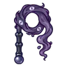

ยามกลวง
มอนธาตุมืด Lv 70–82
เจอที่
| แมพ | โซน | Lv | ภูมิภาค |
|---|---|---|---|
| ย่านนอกกำแพง | 72–82 | เมืองหอระฆัง | |
| ย่านนอกกำแพง | หน้าประตูเมือง | 78–82 | เมืองหอระฆัง |
| ตลาดเช้าที่ไม่มีเช้า | 70–82 | เมืองหอระฆัง | |
| ตลาดเช้าที่ไม่มีเช้า | ลานแผงตลาดกลาง | 78–82 | เมืองหอระฆัง |
| ย่านโรงฟอกหนัง | 70–82 | เมืองหอระฆัง | |
| คูเมืองน้ำนิ่ง | 70–82 | เมืองหอระฆัง | |
| คูเมืองน้ำนิ่ง | สะพานชักจม | 78–82 | เมืองหอระฆัง |
ค่าสถานะตามเลเวล
| Lv | HP | ATK | DEF | MDEF | EXP | Job |
|---|---|---|---|---|---|---|
| 70 | 42,188 | 160–239 | 50 | 17 | 100 | 75 |
| 76 | 53,070 | 177–265 | 55 | 18 | 108 | 81 |
| 82 | 66,665 | 195–292 | 59 | 20 | 116 | 87 |
ตีด้วยธาตุไหนดี
แรงขึ้น: ศักดิ์สิทธิ์ ×1.25
เบาลง: วิญญาณ ×0.75 พิษ ×0.5 มืด ×0 อมตะ ×0
วัตถุดิบที่ดรอป
| ของ | โอกาส | |
|---|---|---|
| ป้ายยามเมือง | 55% | 1 ชิ้น (15% ได้ 2) |
อุปกรณ์ที่ดรอป (7)
| ของ | โอกาส |
|---|---|
| 0.25% | |
| 0.25% | |
| 0.12% | |
| 0.06% | |
| 0.06% | |
 แส้หมอกเงา | 0.06% |
| 0.06% |
สกิล
ทุบพื้น (Lv 25+) · ทุบพื้น (Lv 60+) · ดึง (Lv 60+)